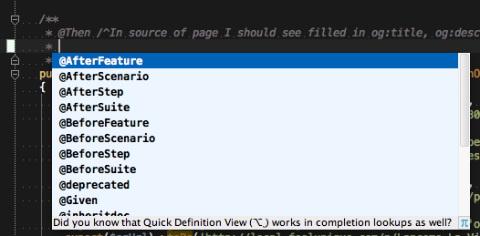
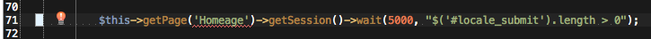

PhpStorm Behat Plugin.
Feature annotations completion
Sub context name type completion
Context return type provider
Feature file generator file
Feature file Behat tags completion
Behat and Page Object extension file templates
Gherkin step reference provider

Sub context, Page Object and Elements inspection
Quick fix for missing Page Objects
Page Object and Elements reference provider
Custom icons for Behat related files